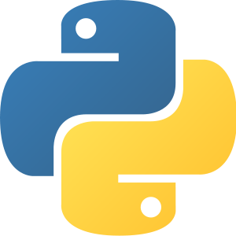

Patrocinador Platinum
Patrocinadores


Apoiadores
Organização

Bem vindo ao maior evento de NoSQL da Bahia!
Continue lendo essa página para descobrir porque você não pode perder esse evento!
Primeiro lote (Até 01/04/2020)
Segundo lote (a partir de 01/04/2020)
Abertura evento com organização, coordenação da UCSAL e apresentação do evento.
Apresentação sobre como usarmos SPARQL para dados dentro de uma Wiki.
Nesta palestra falaremos sobre o LowDB, um banco de dados ultraleve baseado em JSON e com suporte completo ao Lodash.
Novas ideias surgem a todo momento, e muitas vezes a distância entre sucesso e fracasso é o tempo que leva para colocar uma ideia em prática. Para desenvolver uma aplicação e validar uma ideia, tentamos conseguir o máximo de informações previamente e modelamos cuidadosamente o banco de dados para suprir a necessidade da aplicação. Mas o que fazer quando precisamos desenvolver a aplicação, mas ainda não conseguimos essas informações? E quando realmente só pudermos modelar o banco à medida que à aplicação é usada? Nesta palestra veremos como podemos usar NoSQL para desenvolver rapidamente uma aplicação, desde a ideia inicial até a implantação em produção, num cenário onde temos pouco tempo disponível e a incerteza é uma constante.
Gestão de estrutura em Cloud se tornou cada vez mais complexa, principalmente para encontrar melhorias de otimização financeiras dado a diversidade de ferramentas e Setup básicos em diversos serviços distintos, demonstraremos como simplificamos as fontes de dados utilizando apenas o PostgreSQL com indexação textual, tipos geométricos e modelos sem esquema como colunas JSON para estruturas de documentos, entendendo o Trade-off de utilizar um conjunto antes pulverizado em Firebase, Mongodb, redis, ELK, o próprio Postgresql. Para Startups com equipes enxutas e sentem a dificuldade no mundo DevOps moderno.
After some projects, I'll show some considerations for best usage, optimization at DynamoDB included applications in real world used at HostGator Latam
Um dos principais pilares para escalar uma aplicação web é o uso de fila de mensagens e processamento assíncrono, não à toa temos diversos brokers proprietários e open-source e serviços nas nuvens na qual nos permitem enfileirar eventos e mensagens a fim de processá-los no momento mais oportuno ou num ritmo que nossa aplicação consiga atender. Apesar deles escalarem muito bem, adota-los implica em adicionar um novo componente de software na arquitetura e delegar uma grande responsabilidade para o time de infraestrutura. Mas será que precisamos mesmo adotá-los? A verdade é que não, nem todos os sistemas precisam escalar ao ponto de assumir o risco na adoção de um broker. Por mais controverso que pareça, um banco de dados pode ser utilizado como uma fila de mensagens; todos os bancos populares possuem uma feature que permite o uso de filas de forma simples e eficiente: o SKIP LOCKED. Graças a ela conseguimos delegar todo o controle de locking e concorrência para o banco de dados, facilitando assim a implementação dos clientes (producers e consumers) das mensagens na fila. Com isso, obtemos um alto grau de performance e principalmente escalabilidade sem a necessidade de abrir mão do poder do banco de dados ou ter que adicionar um novo componente de software (como um JMS Broker) na arquitetura da solução.
O por quê de o Elasticsearch ser uma excelente escolha frente a outras soluções de banco de dados para entregar relatórios agregados de grandes bases de dados e encadeadas pelo tempo. Vamos entender todos esses conceitos ao redor de uma aplicação que captura e acompanha a negociação de ações na bolsa de valores e exibe um relatório gráfico relativos a intervalos de tempo diferentes no mesmo painel.
A quantidade de bancos de dados diferentes está aumentando em uma velocidade enorme, com um grau bastante alto de especialização para situações específicas, seja análise de dados, seja imutabilidade, seja registro de log, entre outros. Com isso se torna necessário entender o funcionamento interno destes bancos e quais escolhas de implementação foram tomadas para garantir que atendam aos requisitos de negócio de onde estão sendo aplicados. Nesta palestra vamos falar sobre a implementação de um novo banco de dados NoSQL baseado no RethinkDB, mantendo o espírito do banco de dados original, mas com a engine interna completamente renovada utilizando o RocksDB. Falaremos de algumas das vantagens da arquitetura adotada e discutiremos detalhes da implementação, como a própria storage engine, o processamento de queries e a estratégia de indexação.
Com a popularização dos bancos NoSQL e dos serviços de banco de dados (DBaaS), temos visto cada vez mais empresas adotando soluções diferentes do tradicional SGBD SQL. Uma das opções mais populares é o DynamoDB, oferecido pela AWS como um serviço de banco de dados totalmente gerenciado: não precisamos gerenciar memória, disco nem replicas. Em meio a tanta facilidade, nos esquecemos das enormes diferenças em lidar com índices, réplica sets, paginação, joins, monitoring e outras técnicas e operações essenciais. Nessa palestra serão apresentados desafios reais enfrentados em um sistema distribuído que utiliza DynamoDB. Discutiremos padrões que nos ajudaram a lidar com picos de leitura e escrita como write sharding, evenly distribution of workload, páginação e queries especiais com filter expressions, melhores práticas de partition key design, global secondary indexes e monitoramento com cloudwatch contributor insights.
Os bancos de Dados NOSQL (not only SQL) foram criados, principalmente, para resolver problemas com aplicações web que precisam operar com gigantescas cargas de dados além de poder escalar com grande facilidade. Esses tipos de banco de dados vem sendo usados com muita frequência em redes sociais como Twitter, Facebook, além de persistência em aplicações nas nuvens. Outro ponto importante a citar é a crescente adoção destas novas tecnologias, inclusive em mercados mais conservadores, tais como instituições financeiras e agências governamentais, seus motivos são diversos normalmente para solucionar problemas com flexibilidade, escalabilidade, latência e performance. Para demonstrar, compartilhar essas tecnologias foi criado o evento NOSQL-BA.
Os bancos NoSQL está crescendo cada vez mais ao redor do mundo, diversas empresas vem utilizando essa tecnologia.
Compartilhe conhecimento e experiência no assunto, além de conhecer palestrantes com referência internacional.
O evento focado em NoSQL visando também a comunicação e a interação, com minicurso e palestras com profissionais com experiência na tecnologia com referência internacional.
O evento será focado em desenvolvedores, gestores, entusiastas que tenham interesse em falar de NoSQL.